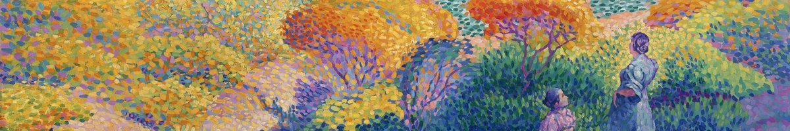

My frequently-used reference for styling {ggplot2} charts.
Published
January 27, 2020

Henri Edmond Cross, Two Women by the Shore, Mediterranean (1896)
I often use {ggplot2} to create graphs but there are certain things I always have to Google. I figured I’d create a post for quick reference for myself but I’d love to hear what you always have to look up!
Ahh… this one always gets me. Sometimes when your color is mostly just for aesthetics, it doesn’t make sense to also have a color legend. This removes the legend and makes the graph look cleaner.
This is a bit trickier, in that you cannot use scale_fill_manual and scale_fill_discrete separately on the same plot as they override each other. However, if you want to change the labels and the colors together, you can use scale_fill_manual like below.
In this case, since we have a legend, we don’t need any x axis labels. Sometimes I use this if there’s redundant information or if it otherwise makes the graph look cleaner.
scale_y_continuous(name = "New Y Axis Title", limits = c(0, 1000000))
Often times, we want our graph’s y axis to start at 0. In this example it already does, but this handy parameter allows us to set exactly what we want our y axis to be.
Depending on our data, we may want the y axis to be formatted a certain way (using dollar signs, commas, percentage signs, etc.). The handy {scales} package allows us to do that easily.
There we have it! Six things I always eventually end up Googling when I am making plots using {ggplot2}. Hopefully now I can just look at this page instead of searching each and every time!
Liked this post? I’d love for you to retweet!
I wrote a quick #rstats blogpost: "Six Things I Always Google When Using ggplot2" 🔎 📊 What do you always have to look up when creating your #ggplot2 graphs? 🤔🤔 https://t.co/jEOR3RDDIh